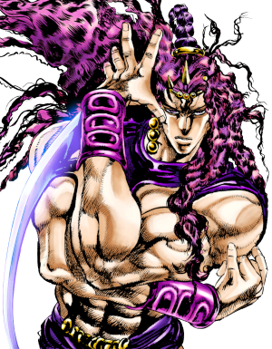

JoJo's Bizarre Adventure é uma história sobre a família Joestar, que possui o destino de derrotar inimigos sobrenaturais. A trama é dividida por partes, cada parte acompanha um integrante diferente da família Joestar, que possuem poderes e habilidades especiais.
Informações base:
Anime/Mangá
Gênero: Aventura, Sobrenatural, Suspense, Comédia, Tragédia e Mistério
Aqui vamos falar sobre a história dessa obra incrível, na ordem cronológica.
A primeira parte Phantom Blood, ambientada na Inglaterra em 1880, segue Jonathan Joestar enquanto ele amadurece e eventualmente combate seu irmão adotivo, o astuto e impiedoso Dio Brando, que se torna um vampiro com a ajuda de uma antiga máscara de pedra. Jonathan é treinado por Will Anthonio Zeppeli na energia vibrante do Hamon, manejada no corpo humano e transferida em combate corpo a corpo, que é o único caminho seguro além da luz do sol para derrotar Vampiros e seus asseclas Zumbis.
Jonathan Joestar (ジョナサン・ジョースター Jonasan Jōsutā) é o protagonista de Phantom Blood e o primeiro JoJo da série JoJo's Bizarre Adventure. Filho de George Joestar I, Jonathan é um homem honesto, gentil e positivo, cuja vida está repleta de tragédias após conhecer seu irmão mais velho adotivo, Dio Brando.
Em sua batalha contra Dio, Jonathan se torna um usuário do Hamon sob a tutela de Will Anthonio Zeppeli. (um verdadeiro herói) 🦸
Parte 1 (PHANTOM BLOOD)
Dio Brando
A primeira parte Phantom Blood, ambientada na Inglaterra em 1880, segue Jonathan Joestar enquanto ele amadurece e eventualmente combate seu irmão adotivo, o astuto e impiedoso Dio Brando, que se torna um vampiro com a ajuda de uma antiga máscara de pedra.
Jonathan é treinado por Will Anthonio Zeppeli na energia vibrante do Hamon, manejada no corpo humano e transferida em combate corpo a corpo, que é o único caminho seguro além da luz do sol para derrotar Vampiros e seus asseclas Zumbis.
O principal vilão da primeira parte de JoJo's Bizarre Adventure, Phantom Blood, é Dio Brando, o irmão adotivo de Jonathan Joestar, o protagonista da história 🧛
Parte 2 (Battle Tendency)
Joseph Joestar
A segunda parte Battle Tendency mostra o neto de Jonathan, Joseph Joestar, cruzando o mundo nos dias que antecederam a Segunda Guerra Mundial em 1938 para combater os Homens do Pilar, uma antiga raça de seres hostis responsáveis pela criação da Máscara de Pedra. Como seu avô, Joseph passa por um árduo treinamento em Hamon ao lado de César Anthonio Zeppeli, neto de Will, pela secreta Lisa Lisa e tenta proteger a Pedra Vermelha de Aja, uma joia procurada pelos Homens do Pilar para completar a Máscara de Pedra e conceder imunidade ao Sol.
Joseph Joestar (ジョセフ・ジョースター Josefu Jōsutā) é o protagonista de Battle Tendency e um aliado em Stardust Crusaders e Diamond is Unbreakable. Ele é o segundo JoJo da série JoJo's Bizarre Adventure. Ele também é o segundo JoJo mais recorrente da série depois de seu neto Jotaro Kujo e é um de seus personagens mais conhecidos.
Joseph é um usuário natural do Hamon e eventual usuário do Stand, empunhando o Stand fotográfico psíquico, Hermit Purple. Joseph enfrenta as ameaças fantásticas que se aproximam dele ao longo de sua vida com iniciativa e engenhosidade impressionante, lutando contra Vampiros, os Homens do Pilar e usuários malévolos do Stand.(talvez o personagem mais esperto da obra) 🧠 🦸
Parte 2 (Battle Tendency)
Kars
A segunda parte Battle Tendency mostra o neto de Jonathan, Joseph Joestar, cruzando o mundo nos dias que antecederam a Segunda Guerra Mundial em 1938 para combater os Homens do Pilar, uma antiga raça de seres hostis responsáveis pela criação da Máscara de Pedra. Como seu avô, Joseph passa por um árduo treinamento em Hamon ao lado de César Anthonio Zeppeli, neto de Will, pela secreta Lisa Lisa e tenta proteger a Pedra Vermelha de Aja, uma joia procurada pelos Homens do Pilar para completar a Máscara de Pedra e conceder imunidade ao Sol.
Kars (カーズ Kāzu) é o principal antagonista de Battle Tendency.
Kars é o líder dos Homens do Pilar e o criador da Máscara de Pedra. Seu objetivo é evoluir ainda mais para se tornar imune aos raios do sol e, assim, ele busca a Pedra Vermelha de Aja para fortalecer suas Máscaras, lutando contra os usuários do Hamon por sua posse. Ele está classificado em 1º lugar entre todos os Homens do Pilar.
Como o criador das Máscaras de Pedra e Vampiros, Kars é um dos personagens mais influentes da série; sua invenção teve repercussões de longo alcance para vários personagens importantes, como Dio Brando , a Família Joestar e a Família Zeppeli. 🦹 🧛

Parte 3 (Stardust Crusaders)
Jotaro Kujo
Em 1987, Jotaro Kujo inesperadamente desenvolve um poder misteriosos conhecido como Stand. Jotaro, seu avô Joseph Joestar e seus aliados, viajam para o Egito em busca do malvado e imortal vampiro Dio Brando , agora conhecido apenas como "DIO" para salvar a mãe de Jotaro, Holly Kujo, cujo Stand despertou e ameaça consumi-la em 50 dias. Enquanto isso, DIO encomendou um número de assassinos com vários tipos de Stands mortais para destruí-los antes que eles possam alcançá-lo.
Jotaro Kujo (空条 承太郎 Kūjō Jōtarō) é o protagonista da Parte 3 e também aparece nas Partes 4-6 Jotaro é o terceiro e o JoJo mais recorrente na série JoJo's Bizarre Adventure.
Jotaro é um delinquente que vive uma vida normal até que o velho inimigo da Família Joestar, DIO, retorna. Jotaro viaja para o Egito para salvar sua mãe e parar o Vampiro de uma vez por todas.
Empunhando o incrivelmente poderoso Star Platinum, Jotaro é o primeiro JoJo apresentado com um Stand e está entre os personagens mais conhecidos da série.
Parte 3 (Stardust Crusaders)
DIO
Em 1987, Jotaro Kujo inesperadamente desenvolve um poder misteriosos conhecido como Stand. Jotaro, seu avô Joseph Joestar e seus aliados, viajam para o Egito em busca do malvado e imortal vampiro Dio Brando , agora conhecido apenas como "DIO" para salvar a mãe de Jotaro, Holly Kujo, cujo Stand despertou e ameaça consumi-la em 50 dias. Enquanto isso, DIO encomendou um número de assassinos com vários tipos de Stands mortais para destruí-los antes que eles possam alcançá-lo.
Dio Brando (ディオ・ブランドーDio Burandō), conhecido como DIO da Parte 3 em diante, é o principal antagonista no universo original de JoJo's Bizarre Adventure, apresentado principalmente como o principal antagonista em Phantom Blood e Stardust Crusaders, e um antagonista chave póstumo em Stone Ocean.
Depois de se tornar um Vampiro e mais tarde um usuário de Stand, Dio reuniu ao seu redor muitos lacaios e é responsável por muitos eventos importantes da série, desde a morte de Jonathan Joestar até a aquisição repentina do poder Stand pela Família Joestar, e seu legado persiste. ao longo da série. Ele é o portador do imensamente poderoso The World.
Parte 4 (Diamond Is Unbreakable)
Josuke Higashikata
A historia passa-se em 1999, a temporada segue as aventuras de Josuke Higashikata, o filho ilegítimo de Joseph Joestar, enquanto ele e seus novos amigos buscam um arco e flecha mágico que concedeu às pessoas poderes perigosos de Stand, arrancando a vida antes tranquila de Josuke em sua casa cidade de Morioh.
Josuke Higashikata (東方 仗助, Higashikata Jōsuke; o Suke — 助 — em seu nome também pode ser pronunciado como "Jo") é o protagonista de Diamond is Unbreakable e o quarto JoJo da série série JoJo's Bizarre Adventure.
Josuke é um aluno do primeiro ano do ensino médio que mora na cidade de Morioh. Ele logo conhece Jotaro Kujo, que o informa que ele é filho ilegítimo de Joseph Joestar. Depois que seu avô morre, Josuke assume a responsabilidade de proteger sua amada cidade dos malévolos usuários do Stand. Josuke empunha Crazy Diamond, um poderoso Stand com o poder de consertar quase tudo.
Parte 4 (Diamond Is Unbreakable)
Yoshikage Kira
A historia passa-se em 1999, a temporada segue as aventuras de Josuke Higashikata, o filho ilegítimo de Joseph Joestar, enquanto ele e seus novos amigos buscam um arco e flecha mágico que concedeu às pessoas poderes perigosos de Stand, arrancando a vida antes tranquila de Josuke em sua casa cidade de Morioh.
Yoshikage Kira (吉良 吉影 Kira Yoshikage) é o principal antagonista de Diamond is Unbreakable.
Despercebido em Morioh por anos e imperturbável durante toda a sua vida, Yoshikage Kira é um serial killer anormal e parafílico cuja rotina é abalada quando o fantasma de sua primeira vítima, Reimi Sugimoto , implora ao Grupo Joestar para procurá-lo e ele atrai atenção indesejada ao matar Shigekiyo Yangu. Kira é um usuário de Stand e empunha a poderosa Killer Queen, que tem a habilidade de criar bombas mortais.
Parte 5 (Golden Wind)
Giorno Giovanna
Em 2001, dois anos após os eventos de Diamond Is Unbreakable , Koichi Hirose é enviado para a Itália por Jotaro Kujo, que o incumbe de investigar uma pessoa conhecida como Haruno Shiobana, cujo nome verdadeiro é revelado mais tarde como Giorno Giovanna, filho de Jonathan Joestar e indiretamente Dio Brando. A história segue então Giorno em seu objetivo de chegar ao topo do grupo mafioso "Passione" no qual seu objetivo e de transformá-los em um bando de ladrões honrados.
Giorno Giovanna (ジョルノ·ジョバァーナJoruno Jobāna) é o protagonista de Golden Wind e o quinto JoJo da série JoJo's Bizarre Adventure.
Giorno é o filho ilegítimo de DIO, concebido com o corpo roubado de Jonathan Joestar. Ele é apresentado como Haruno Shiobana (汐華 初流乃). Ele fala de sua intenção de se juntar à poderosa gangue Passione e seu sonho de se tornar um "Gangstar".
Giorno é um Usuário de Stand nato, empunhando a Gold Experience em batalha.
Parte 5 (Golden Wind)
Diavolo
Em 2001, dois anos após os eventos de Diamond Is Unbreakable , Koichi Hirose é enviado para a Itália por Jotaro Kujo, que o incumbe de investigar uma pessoa conhecida como Haruno Shiobana, cujo nome verdadeiro é revelado mais tarde como Giorno Giovanna, filho de Jonathan Joestar e indiretamente Dio Brando. A história segue então Giorno em seu objetivo de chegar ao topo do grupo mafioso "Passione" no qual seu objetivo e de transformá-los em um bando de ladrões honrados.
Diavolo (ディアボロ Diaboro) é o principal antagonista apresentado em Golden Wind.
O primeiro chefe da Passione, Diavolo busca segurança e superioridade absolutas ao eliminar todos os vestígios de seu passado, incluindo sua filha, Trish Una , e tenta recuperá-la manipulando o Time Bucciarati por meio de suas ordens. Ele e Vinegar Doppio são duas almas que habitam um único corpo, e enquanto Doppio pode manifestar apenas parcialmente o incrivelmente mortal King Crimson , Diavolo é o principal usuário do Stand e exerce seu poder brutal por completo.
Parte 6 (Stone Ocean)
Jolyne Cujoh
Passado em 2011, Jolyne Cujoh foi condenada por 15 anos de prisão depois de se envolver em um acidente de carro e ser acusada de homicídio. Ela está presa na Prisão Green Dolphin Street, na Flórida, apelidada de "Aquário". Seu pai, Jotaro Kujo, dá a ela um pingente que faz com que um misterioso poder desperte dentro dela. Quando uma série de eventos inexplicáveis ocorrem, Jotaro informa sua filha que um discípulo de DIO a incriminou para que ele pudesse matá-la na prisão, e a encoraja a escapar.
Jolyne Cujoh (空条 徐倫Kūjō Jorīn ) é a protagonista da Parte 6 e a sexta JoJo da série JoJo's Bizarre Adventure.
Jolyne é a única protagonista mulher " JoJo " até hoje, e filha de Jotaro Kujo. Inicialmente uma garota comum, Jolyne rapidamente desperta seu Stand baseado em cordas, Stone Free, durante seu tempo na prisão.
Parte 6 (Stone Ocean)
Enrico Pucci
Passado em 2011, Jolyne Cujoh foi condenada por 15 anos de prisão depois de se envolver em um acidente de carro e ser acusada de homicídio. Ela está presa na Prisão Green Dolphin Street, na Flórida, apelidada de "Aquário". Seu pai, Jotaro Kujo, dá a ela um pingente que faz com que um misterioso poder desperte dentro dela. Quando uma série de eventos inexplicáveis ocorrem, Jotaro informa sua filha que um discípulo de DIO a incriminou para que ele pudesse matá-la na prisão, e a encoraja a escapar.
Enrico Pucci (エンリコ・プッチ Enriko Pucchi) é o principal antagonista de JoJo's Bizarre Adventure: Stone Ocean.
Um seguidor leal e amigo de DIO, ele implementa um plano há muito tempo formulado por DIO para "alcançar o céu". Pucci é usuário de Stand, seu Stand manipula a mente e a alma, seu nome é Whitesnake.
Parte 7 (Steel Ball Run)
Johnny Joestar
A Parte 7 de "JoJo's Bizarre Adventure", intitulada "Steel Ball Run", é ambientada nos Estados Unidos no final do século 19. A história segue Johnny Joestar, um ex-jovem jóquei que ficou paralisado após um acidente, e Gyro Zeppeli, um misterioso competidor que usa uma técnica chamada "Steel Ball" para manipular a energia cinética.
Os dois se juntam à corrida Steel Ball Run, uma competição de cavalo que atravessa o país, em busca de uma recompensa. Durante a corrida, eles enfrentam diversos adversários, cada um com seus próprios Stands e habilidades únicas. A trama explora temas de redenção, amizade e a busca por propósito, enquanto Johnny descobre mais sobre si mesmo e seus poderes.
A história também inclui elementos sobrenaturais e uma rica mitologia, ligando-se à história anterior da série. O desenvolvimento dos personagens e as interações são centrais para a narrativa, culminando em uma conclusão épica e emocionante.
Johnny Joestar (ジョニィ・ジョースター Joni Jōsutā ) , nascido Jonathan Joestar (ジョナサン・ジョースター Jonasan Jōsutā ) é o protagonista principal de Steel Ball Run e um personagem secundário em JoJolion. Ele é o sétimo JoJo da série JoJo's Bizarre Adventure.
Um ex -prodígio das corridas de cavalos que se tornou paraplégico, Johnny se junta à corrida SBR para descobrir o segredo por trás das Steel Balls de Gyro Zeppeli, pois são a única coisa capaz de restaurar suas pernas.
Ao longo da corrida, Johnny se torna um usuário de Spin, bem como um usuário de Stand quando adquire Tusk.
Parte 7 (Steel Ball Run)
Funny Valentine
A Parte 7 de "JoJo's Bizarre Adventure", intitulada "Steel Ball Run", é ambientada nos Estados Unidos no final do século 19. A história segue Johnny Joestar, um ex-jovem jóquei que ficou paralisado após um acidente, e Gyro Zeppeli, um misterioso competidor que usa uma técnica chamada "Steel Ball" para manipular a energia cinética.
Os dois se juntam à corrida Steel Ball Run, uma competição de cavalo que atravessa o país, em busca de uma recompensa. Durante a corrida, eles enfrentam diversos adversários, cada um com seus próprios Stands e habilidades únicas. A trama explora temas de redenção, amizade e a busca por propósito, enquanto Johnny descobre mais sobre si mesmo e seus poderes.
A história também inclui elementos sobrenaturais e uma rica mitologia, ligando-se à história anterior da série. O desenvolvimento dos personagens e as interações são centrais para a narrativa, culminando em uma conclusão épica e emocionante.
Funny Valentine (ファニー・ヴァレンタインFanī Varentain) é o principal antagonista de Steel Ball Run.
Funny Valentine é o 23º presidente dos Estados Unidos e o verdadeiro mentor da corrida Steel Ball Run. Ele observa a competição por trás das cortinas e espera reunir o cadáver do santo para usar a relíquia sagrada para promover os interesses dos Estados Unidos da América.
Valentine é um usuário do Stand , empunhando seus Dirty Deeds Done Dirt Cheap (D4C) e suas habilidades dimensionais para viajar por universos paralelos.
Parte 8 (JoJolion)
Josuke Higashikata
A Parte 8 de "JoJo's Bizarre Adventure", intitulada "JoJolion", segue a história de Josuke Higashikata, que vive em uma versão alternativa de Morioh após o evento do terremoto. Josuke sofre de amnésia e busca descobrir sua verdadeira identidade, enquanto lida com questões familiares e a misteriosa "família Higashikata".
A narrativa gira em torno de Stand users e a busca por um artefato chamado "Rock Humans". A trama é complexa, com várias reviravoltas, e explora temas como identidade, memória e conexão familiar. Ao longo da parte, Josuke e seus aliados enfrentam inimigos intrigantes, revelando segredos obscuros sobre sua origem e o passado da cidade.
Josuke Higashikata (東方 定助 Higashikata Jōsuke) é o protagonista principal de JoJolion, o oitavo JoJo da série JoJo's Bizarre Adventure .
Josuke é um jovem que sofre de amnésia retrógrada, sem nenhuma memória antes de ser descoberto por Yasuho Hirose perto das Paredes Oculares em Morioh Town. Ele se dedica a descobrir sua antiga identidade e aqueles originalmente associados a ele.
A identidade original de Josuke era a de Josefumi Kujo (空条 仗世文Kūjō Josefumi ) , e tornou-se seu eu atual após a fusão com o homem Yoshikage Kira (吉良 吉影Kira Yoshikage ) . Josuke é um Stand User e mantém sua identidade original Soft & Wet , embora com pequenas mudanças influenciadas por sua outra metade.
Parte 8 (JoJolion)
Toru
A Parte 8 de "JoJo's Bizarre Adventure", intitulada "JoJolion", segue a história de Josuke Higashikata, que vive em uma versão alternativa de Morioh após o evento do terremoto. Josuke sofre de amnésia e busca descobrir sua verdadeira identidade, enquanto lida com questões familiares e a misteriosa "família Higashikata".
A narrativa gira em torno de Stand users e a busca por um artefato chamado "Rock Humans". A trama é complexa, com várias reviravoltas, e explora temas como identidade, memória e conexão familiar. Ao longo da parte, Josuke e seus aliados enfrentam inimigos intrigantes, revelando segredos obscuros sobre sua origem e o passado da cidade.
Toru (とおる (透龍) Tōru) é o principal antagonista de JoJolion. Ele é o cérebro por trás da Organização Locacaca e o médico chefe do Hospital Universitário TG, sobre o disfarce de seu Stand como Satoru Akefu. Ao lado de seu Stand, ele se disfarça de trabalhador de meio período no hospital.
Ele eventualmente é revelado como um Rock Human e um usuário do Stand, empunhando o Wonder Of U causador de calamidade.
Conclusão
Até o momento, essas são todas as partes de JOJO. A parte 9 ainda está em lançamento.
Vídeo para tentar te convencer a assistir/ler JOJO